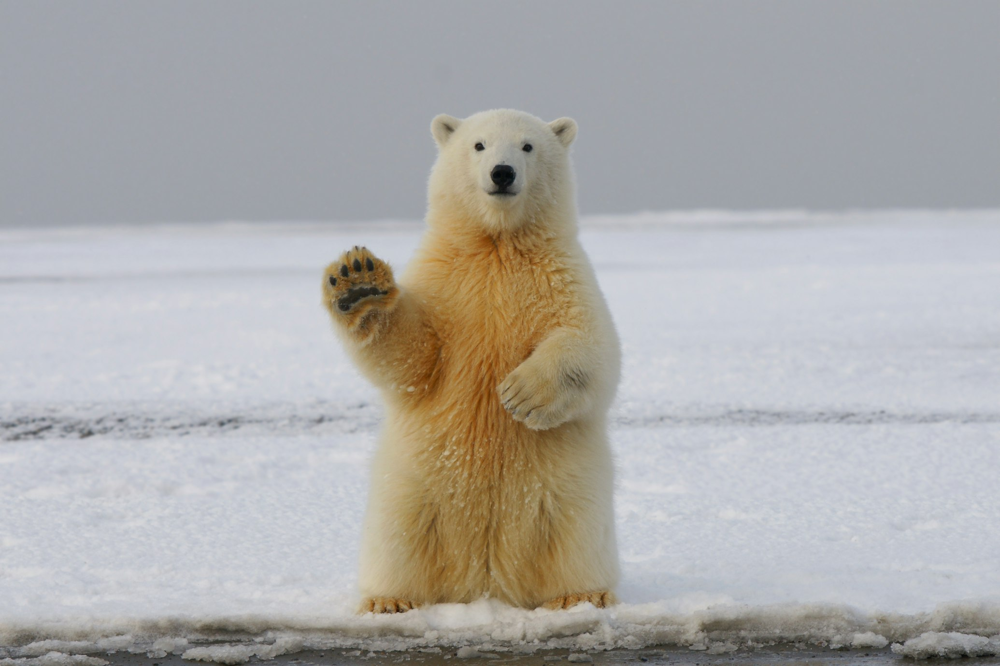
Polar Bears & Antarctica
An exploration of Arctic wildlife and the icy continent at the bottom of the world

The Iron Snail
Chrysomallon Squamiferum - The only creature with iron armor from the deep ocean vents
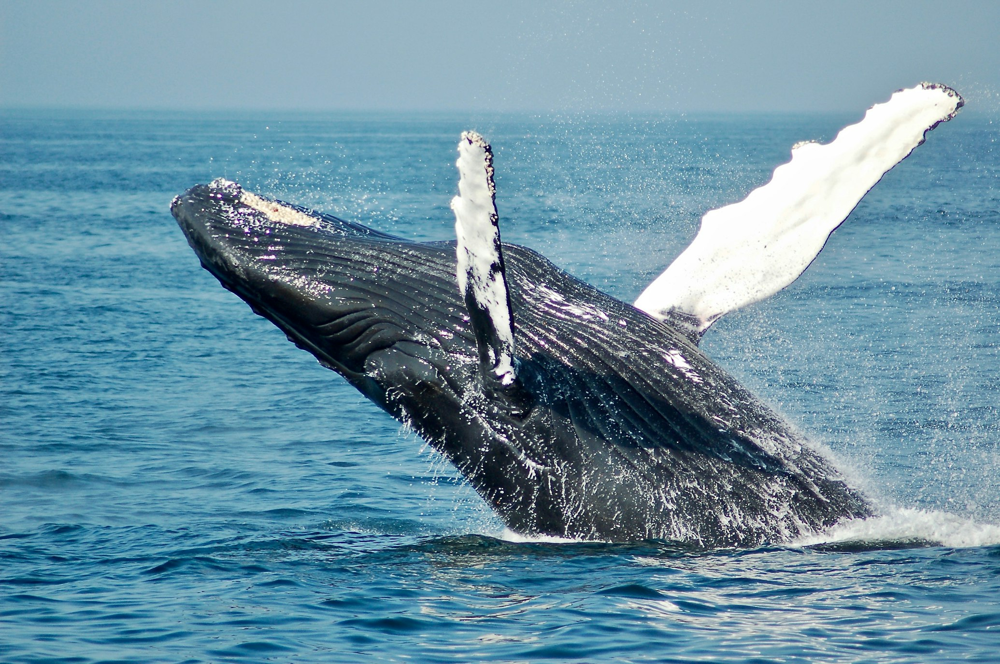
Seals of the World
From elephant seals to sea lions - exploring all types of pinnipeds across the globe

Beavers: Nature's Master Engineers
An Educational Journey into Nature's Architecture
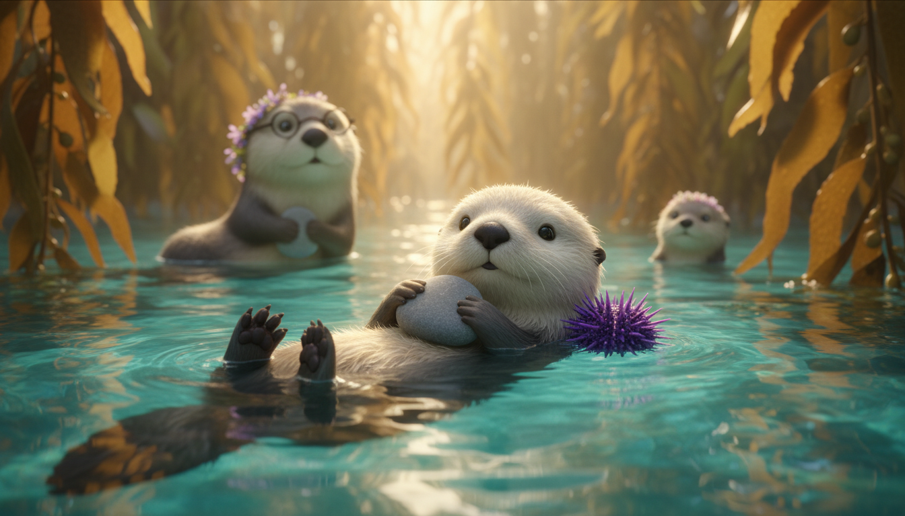
Sea Otters: Ocean's Playful Engineers
Join Ollie's journey through kelp forests and ocean adventures
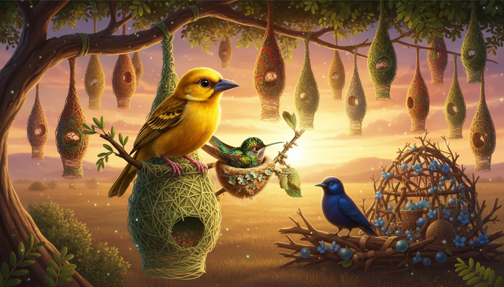
Birds: Nature's Master Builders
An Educational Journey into Nature's Architecture
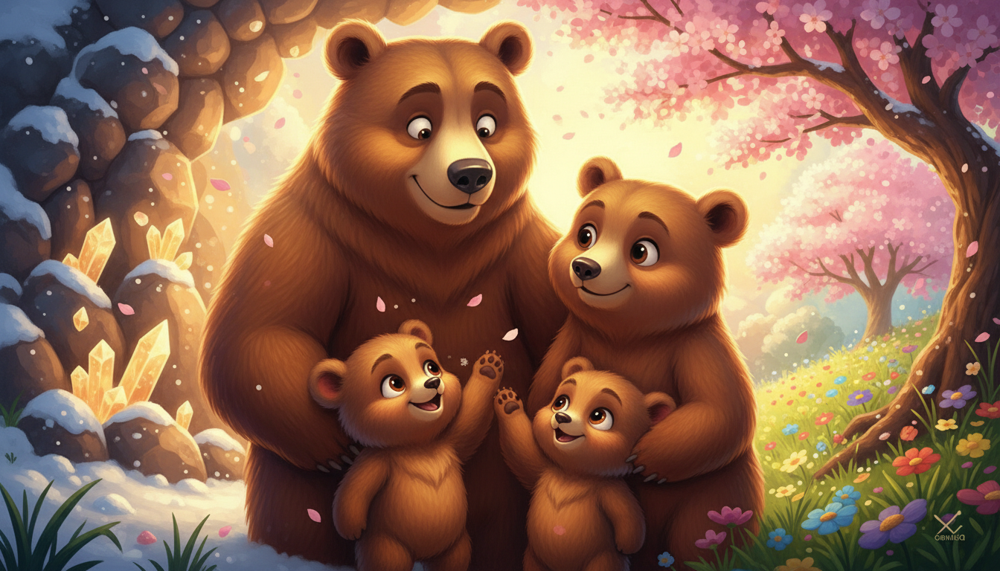
Brown Bears: The Promise of Spring
A Cozy Winter Tale of Family and Hope
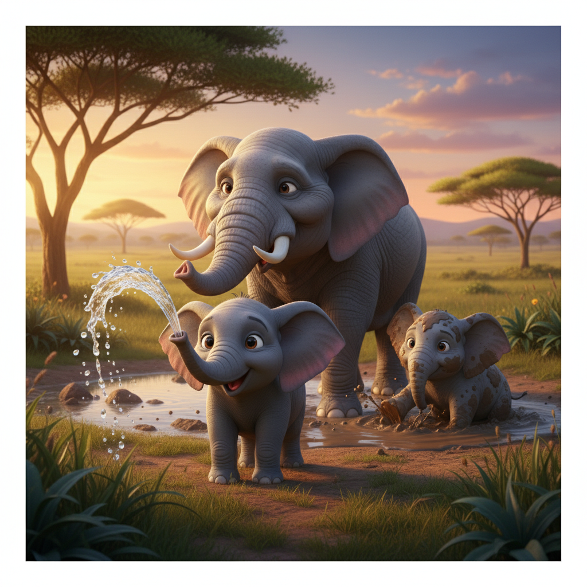
Elephants: Giants with Big Hearts
A Journey Through Tembo's First Year
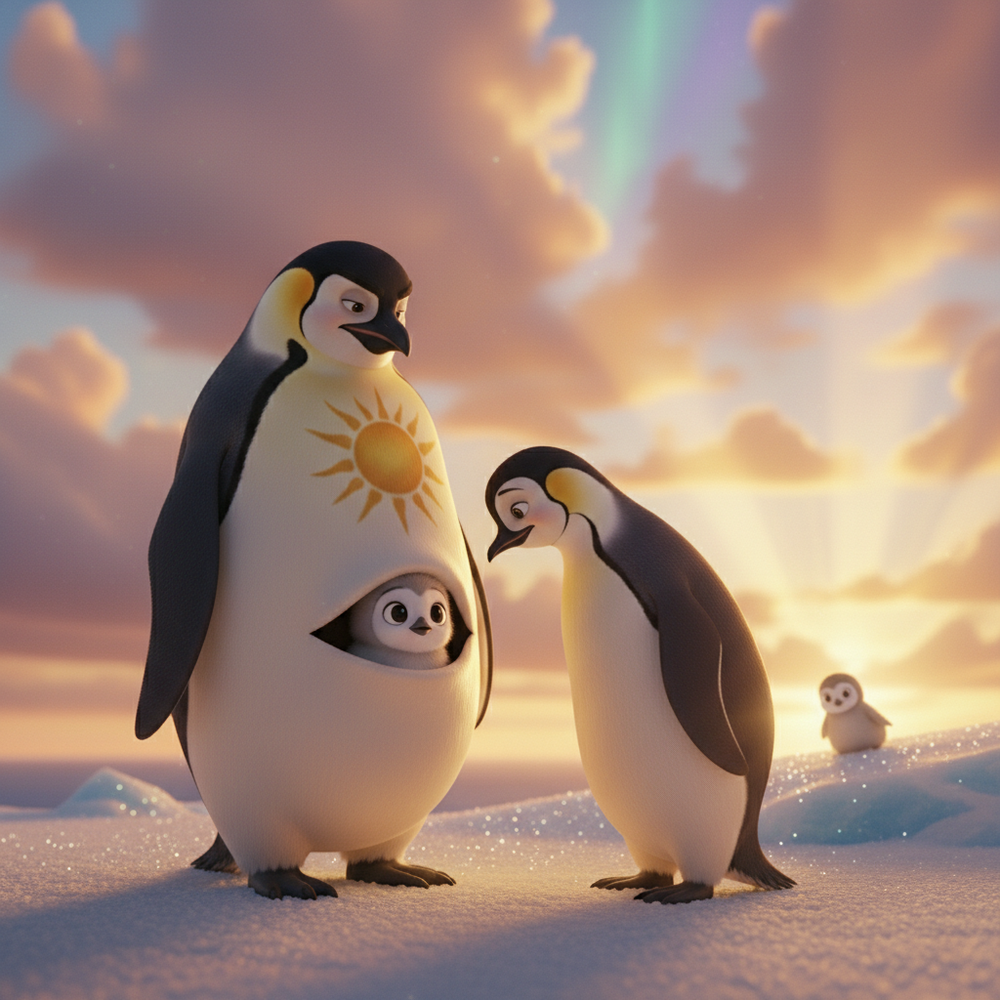
Penguins: The Warmest Family on Ice
Kaia's Cozy Winter Adventure
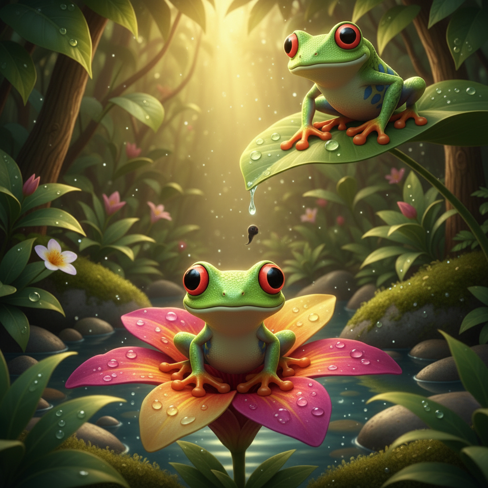
Frogs: The Great Transformation
Luna's Magical Journey from Tiny Egg to Leaping Frog
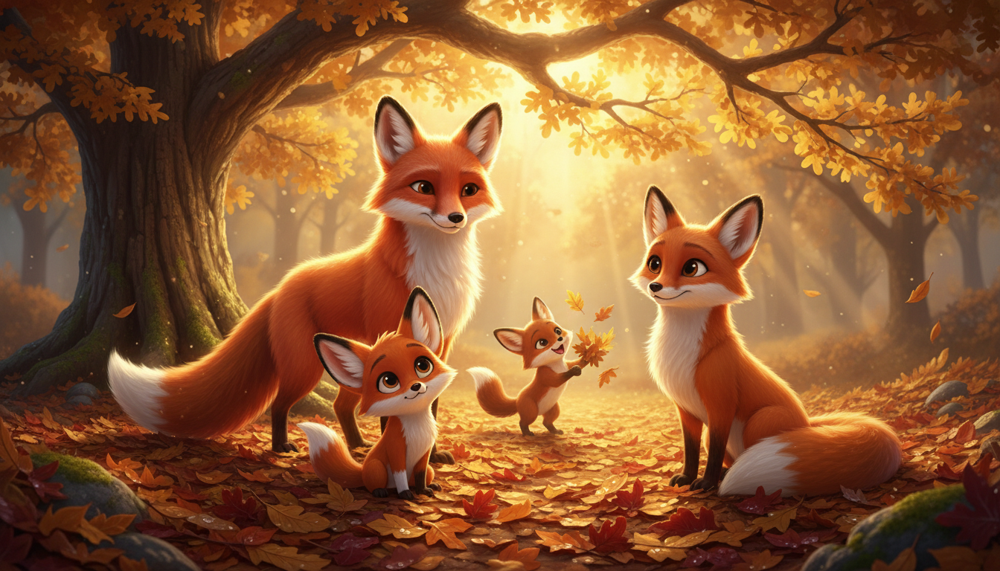
Red Foxes: A Den Full of Love
Pip's Adventures in the Autumn Meadow
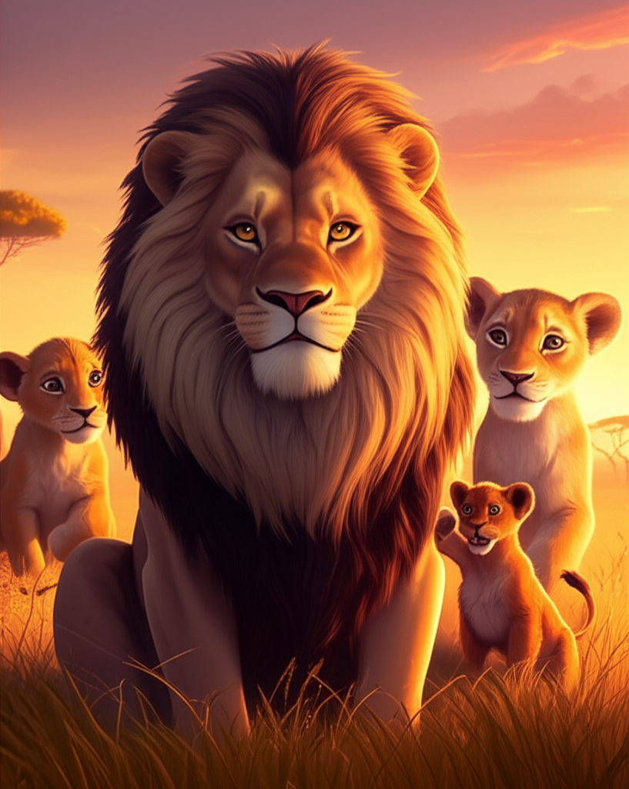
Lions: Kings of the Savanna
A Family of Roars, Naps, and Mighty Love
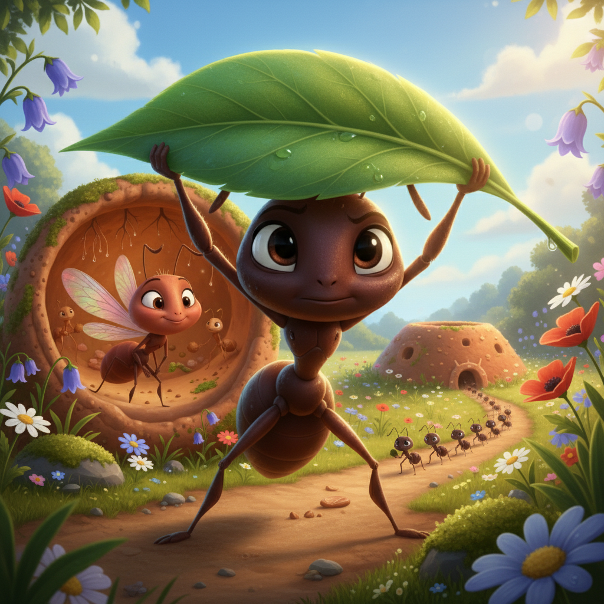
Ants: The Tiny Builders
A World of Teamwork Under Our Feet
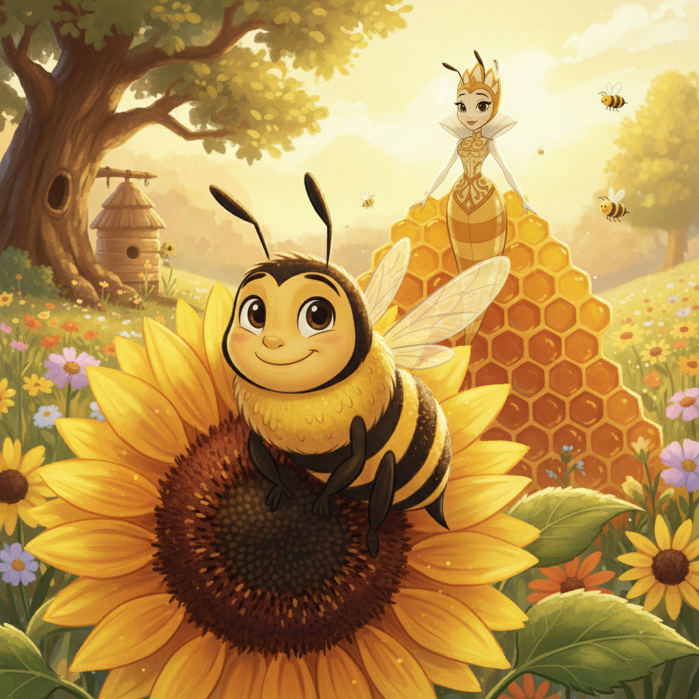
Bees: The Honey Makers
A Sweet Story of Flowers, Dance, and Teamwork